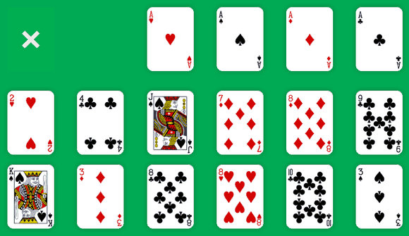
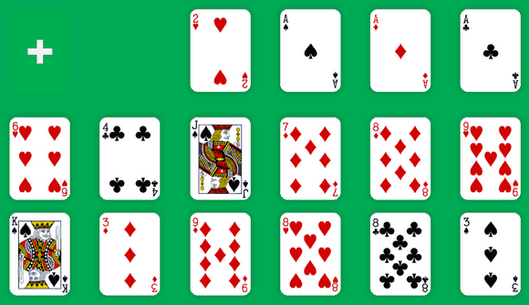
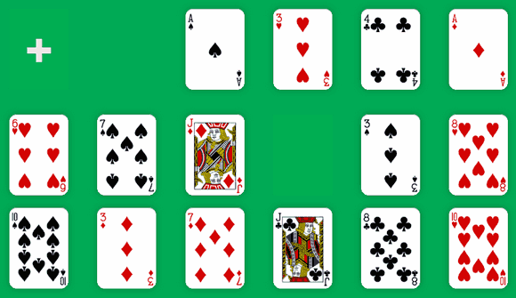
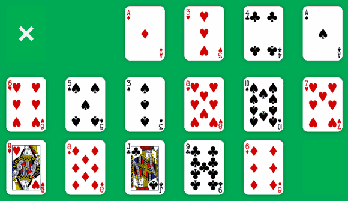

Cruel is an entertaining solitaire game from Microsoft Entertainment Pack, based on Perseverance. Like Golf, it was a game developed by Ken Sykes for Microsoft Entertainment Pack.
Cruel Solitaire uses only one standard deck of 52 playing cards. At the beginning of the game, the cards are shuffled and distributed face up in 12 stacks (the Tableau), with each stack containing four cards.
As we deal, the four aces are rather placed in four suit stacks at the top of the screen (the Foundations), upon which the suits will be built in sequence. The goal of the game is to fill these suits by moving all the cards from the Tableau to the Foundations.
A re-deal button is located in the upper-left corner. Once you have moved at least one card, you can click this button to re-deal at any time during the game.

We can move the top card in a stack up to the corresponding Foundation, provided it is one higher in rank. We can also move the top card in a stack to another stack, provided it follows the same suit and is one lower in rank.
For example, in the above game, we can immediately play four different moves:

Luckily, after we moved the 8 of Clubs, the 9 of Diamonds appears face up. So instead of moving 7 of Diamonds onto 8 of Diamonds, we first move the 8 onto the 9 and then the 7 onto the 8.
The move of the 9 of Clubs has also revealed the 9 of Hearts, so we can move the 8 of Hearts onto it. We are lucky as this move reveals the Queen of Spades. We can move her onto King of Spades, then Jack of Spades from the third stack onto the Queen.
Then we can move 3 of Spades from the last stack onto 4 of Spades in the fifth stack. There, 3 of Clubs appears and we move it onto 4 of Spades in the second stack.
We're really in the mood:
After all these moves, our game looks like this:

This time, we are unable to figure out any more move. We have to re-deal by clicking on the "+" button located in the upper-left corner of the playing area.
Re-dealing simply rearranges the cards in the Tableau, keeping four cards in each stack without changing the consecutive order of any cards. For example, as we moved cards so that the 9, 8 and 7 of Clubs were together, the re-deal keep this order intact.
During the re-deal, cards are not shuffled but collected this way:
Then the cards are redistributed like this:

So we can play:
And that's all. No more move is available and we need to re-deal to continue playing the game.
Re-deal is always a little scary. If you can't move a card after re-dealing, you are stuck and the game is over!
“Cruel” is the perfect name for this patience game. You have to be very concentrated if you want to win. But wins are rare. I suppose a win every 5 or 6 games is a good rate, although some people think the chances of winning are about one in three.
Don't be too hard to yourself, Cruel is fun because you need the perseverance to get a winnable game and you have to be concentrate to win this game.
Klondike Solitaire is easy to start, Golf Solitaire is fast to play, but Cruel is highly addictive to win. Try Cruel Solitaire online if you need to challenge your concentration and your perseverance.
As usual with Solitaire-Play, it's a responsive solitaire game. You can play it for free with phone, tablet or desktop!
Michel (2016/06/07)